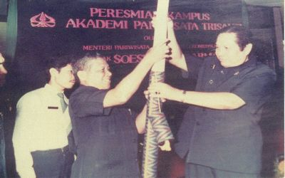
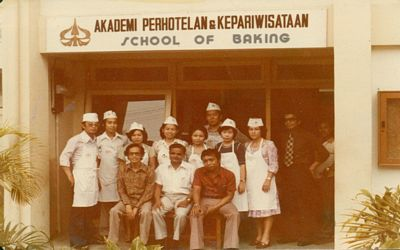

Institut Pariwisata Trisakti (IP) Trisakti didirikan tanggal 2 Juni 1969 dengan nama Akademi Perhotelan & Kepariwisataan Trisakti, atas gagasan Bapak Mulyatno Sindhudarmoko, SE., Dekan Fakultas Ekonomi Universitas Trisakti pada waktu itu. Selanjutnya Bapak Mulyatno Sindhudarmoko, SE., ditunjuk oleh Yayasan Trisakti menjadi Direktur Akademi Perhotelan & Kepariwisataan Trisakti terhitung 26 Nopember 1969 sampai dengan tahun 1990. Tahun 1972, Akademi Perhotelan & Kepariwisataan Trisakti membuka jurusan baru yaitu Tour & Travel. Akademi Perhotelan dan Kepariwisataan Trisakti kemudian diubah menjadi Akademi Pariwisata Trisakti sesuai ketentuan Pemerintah. Tahun 1985 mulai mengikuti Ujian Negara Sarjana Muda yang diselenggarakan oleh Kopertis Wilayah III.
Tahun 1987, Akademi Pariwisata Trisakti dari Kampus A Kyai Tapa Grogol kemudian pindah menempati kampus barunya di jalan IKPN, Tanah Kusir, Bintaro. Gedung A kampus baru Akademi Pariwisata Trisakti memperoleh kehormatan diresmikan pembukaannya oleh Menteri Pariwisata, Pos dan Telekomunikasi pada saat itu, Bapak Soesilo Soedarman pada 3 Desember 1988. Peristiwa lain yang cukup penting, tanggal 21 Juni 1989, Akademi Pariwisata Trisakti memperoleh status “DISAMAKAN” berdasarkan SK Mendikbud No : 383/O/1989, sedangkan Gedung B kampus Akademi Pariwisata Trisakti selesai di bangun dan diresmikan pembukaannya oleh Menteri Pendidikan dan Kebudayaan, Prof. Dr. Ing. Wardiman Djojonegoro pada 10 April 1997. Pada tahun 1999, Akademi Pariwisata Trisakti berubah nama dan statusnya menjadi Sekolah Tinggi Pariwisata Trisakti berdasarkan SK Mendikbud RI No : 102/D/O/1999 tertanggal 15 Juni 1999. Perubahan nama tersebut karena sejak saat itu Sekolah Tinggi Pariwisata Trisakti menyelenggarakan jenjang pendidikan Diploma IV selain jenjang pendidikan Diploma III untuk jurusan Perhotelan dan Usaha Perjalanan Wisata. Tahun 2001, Sekolah Tinggi Pariwisata Trisakti membuka pula jenjang pendidikan Diploma I dengan Jurusan Perhotelan mempunyai bidang peminatan yaitu Divisi Kamar dan Tata Hidang serta Jurusan Usaha Perjalanan Wisata mempunyai bidang peminatan yaitu Tarif Dokumen Pasasi dan Pemanduan.
About
“As a seasoned digital marketer with a passion for innovative strategies and creative storytelling, I leverage my expertise in digital marketing to drive business growth and brand awareness for my clients. With a strong background in data analysis and a keen eye for detail, I excel in crafting targeted campaigns that resonate with diverse audiences and deliver measurable results.”